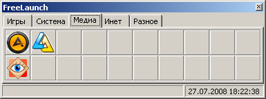

1. Вкладки.
Можно настроить количество вкладок и разместить ярлыки на каждой вкладке.
2. Содержимое вкладки.
Отображает содержимое выбранной пользователем вкладки.
3. Информация о кнопке.
Показывает описание кнопки, над которой в текущий момент находится курсор мыши. При создании кнопки описание берется из свойств файла.
4. Дата/время.
Показывает текущие дату и время.